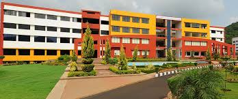

Mangalore Institute of Technology And Engineering (MITE) is a college of engineering and technology located in Mangalore, India. It was established by Mr. Rajesh Chowta under the Rajalaxmi Education Trust, Mangalore in 2007 with an objective of promoting research oriented advanced courses in the field of technology and engineering. Contents
Campus 2 Library 3 Courses 4 References
Campus MITE is on the Mangalore - Solapur Highway, about 30 km from Mangalore and about 4 km short of the town of Moodabidri. The institute is affiliated to the Visvesvaraya Technological University, Belgaum and approved by the All India Council of Technical Education (AICTE), New Delhi.Aeronautical Engineering, Computer science Engineering, Civil Engineering and Mechanical Engineering departments are NBA accredited. Library Mite central library is on the ground floor of the main college building.
click me! 